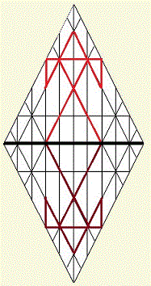

The Mystery of Iniquity

Lucifer was a wonderful light bearer: everything one might ask for, were it not for the iniquity. This stain, if stain it was, could not have been intrinsic to Lucifer's character; for he was perfect in all his ways. Iniquity was unknown in him or by him or of him until it was discovered, there. And when it was discovered, the fall was not only immediate, but necessary: because of mercy and by reason of the love of HaShem hwhy, in whom we also live, moving, in accordance with our states of being.
The covering cherub of heaven, Lucifer was perfect in all his ways until iniquity was found in him. It's commonly understood that "iniquity" is "grossly unfair or immoral behavior." If that's the case, then Lucifer's pervious perfection was a matter of the being's performance, rather than the predictable result of his character. In such a case, perfection was his to maintain and his to lose whenever resolve should fail. And should it fail, opening the cherub to regret, iniquity would have its way, wreaking havoc on the soul and its inhabitants. Should it bring failure, the inquity found in the Light Bearer would better be attributed to the corrosive effect of narcissistic pride, as it's written, "Pride goes before destruction, and a haughty spirit before a fall." The fault, then, is to be found in the being, not in the being's actions or reactions.
If Lucifer's fall was due to an innate wickedness, the question arises: "What was God's intent when appointing the great angel with the fatal flaw as the 'covering cherub'?" That he should be mocked, when the inmiquity has its way?We are instructed that HaShem, alone, is perfect in all his ways; and so, Lucifer was perfect only so far as he rested in the perfection of the Father. My view is that the imperfection discovered in Lucifer was manifestation of a bending within the light for which the cherub was responsible. In a sense, iniquity overtook Ludifer in his perfect performance of obligation; it was in no way intrinsic to his character, nor did it have greater consequence that the gift of Light with with Lucifer was first entrusted.
Lucifer's fall was subsequent to the creation of Earth: for the judgment applied to him was that he should be cast down to Earth, where he would live and die as a human being. Perfect before iniquity was found in him, the failing must have "crept into him: unawares," to borrow the phrase. How, then, can righteous God accuse him of error. He served in his capacity, perfect in all his ways, until it was found. Lucifer was not God's enemy. He was perfect.
If fault there was, the the explanatioin must concern th light Lucifer carried, rather than the nature of his soul. Were it not so, one would have to argue that God willfully chose to create a monster to compete for the love of mankind. That's psychopathological. No, was due to the nature of the light he carried. Because light is a created thing, we understand that it sometimes speaks in parables. The mystic has his views, but the realist insists that the dynamics of Light follow codes that are imbedded and operative within all created things.
As are we all in every moment of every day, light is subject to the pull of inertia. A created manifestation, Light has mass: it would radiate from its source, following a straight line into infinity, were it not for the mass intrinsic to its manifestation. Light consists of photons; and their weight establishes a latent, gravitational force, which we call inertia. Inertia acts upon what is, changing it into what was before it is again, but somewhat differently. It's the spur to accretion. Without the gravitational miracle of accretion, there would be no Creation; for accretion, child of intertia, provides the skeleton for all that life supports.
That being the case, the conclusion is that iniquity has little to do with the tug-of-war between light and darkness, good and evil. As suggested, iniquity is the spiritual equivalent of the latent force of inertia. This is a reasonable conclusion; for the invisible things of God are visible in the things that are made, suggesting that iniquity is spiritual gravity, whose weighty pull marred Lucifer's perfection.
Just as natural light curves as it arcs across the vast dimensions of the universe because of the pull of mass, spiritual light is also affected by body mass, whether the life form is human or angelic. I don't believe that the fate of Lucifer was the result of sin or some behavioral error, precisely; rather, I think the iniquity found in him was reflective of the nature of the Light, itself: At the core of all things, light is the cohesive element of the universe. Even rocks are children of Light; for over eons, light became trapped in the pull of matter. Rocks absorb it, vegetation drinks it down, storing it in roots, that it may transform it into food to sustain animal life. Without the phenomenon of light, there would be no measurable thing any where.
I conclude that Lucifer's fall did not disqualify him from grace; for the iniquity found in him was not of his doing, but was akin to the pull inertia imposes upon Creation' matter. Neither good nor bad, inertia is a latent force capable of bending light; and Lucifer's imperfection was among its effects. With the command, "Let there be," Lucifer was fated to tumble from the immortal realm into the mortal realm, because , through Creation, he became vulnerable to the phenomenon of acretion, which is akin to incarnation. Although light has a nearly negligible mass, the weight of its photons renders it succeptible to the iniquity of gravity.
Beginnings have endings. The loss of Lucifer's heavenly state brought radical change, but not tragic change. God is good. Aware of that goodness, the angels of HaShem shouted for joy at the creation of man, whose physical form, comprised of stored light that is capable of receiving, then reflecting or projecting, spiritual light as well.
As time unfolded, mankind would become chariots of Ruach HaQodesh, God's Holy Spirit, serving as vehicles for angelic transformation. Living and dying as men, the hosts of heaven would enter upon the task of establishing unique identities they could carry into life everlasting, which was HaShem's intent, from the beginning. The great wedding feast aproaches; and on that day, the incarnate souls who loved the Light of God will become transfigured, no longer mere bearers of Light, but as beings of Light.Working out their perfection during their lives on Earth, they shall become transformed into beings of Light through the renewal of their minds.
This mystery is among the things the early followers of Y'shua were unable to bear. They were unprepared: not because of failings or weaknesses, but because the demands of order follow sequence. The walk in the steps of messiah is led and paced by Ruach HaQodesh, which rewards he faithful with gifts of knowledge concerning the nature and ways of HaShem. There was war--unruliness-- in Heaven because it was of paramount importance that God's sons learn and understand "this," so they would be able to endure, conquer, and triumph over "that."
In times past, the apostle lamented that the mystery of iniquity was alr already at work among early believers in the Way, the Truth, and the Life. From the last seder of mashiyach Y'shua to the uproars of this present day, stumbles among believers were apparent and remain apparent. The weight of iniquity takes its toll because the lessons are difficult: impossible, except through the guidance of HaShem, and that's the point: the path of the cross leads to knowledge of the intersection of the mortal and immortal realms, teaching us of God's love as we make our way back home. Far greater than the light found in natural man, the Light within spiritual man is the very essence of the Godhead. Called to walk in the perfection of Father and Son, mankind must carry the Treasure of God's Light, which is the very Life of HaShem, in earthen vessels that must have an end.
Living the life of the Spirit in mortal bodies is a dynamic experience, and the mass of physical man man's body exerts the equivalent of the latent force of inertia within the new creature, the spiritual man. This is why Paul saw two laws operating within himself, and why the scripture speaks of twins struggling within the womb. This is why it is written, "I would not have you ignorant; for the end shall not come, except there be a falling away, first."
The fabled phoenix once flew near the Source of Light, but its wings caught fire, and the creature burned, falling to the ground at its first approach to the light of heaven. Having fallen back to Earth, it was incumbent upon the phoenix to gather itself from its ashes and to rise again. A roughly equivalent experience unfolds as natural man is consumed by inward fires, is reborn of the Holy Breath and rises again as spiritual man, joining the procession leading to the great wedding feast of the Messiah of Matthew 1:1, in the steps of the man of Matthew 1:16. In their awakend state, walking the Earth in tandem with the Salvation that comes by the will of God, believers are able to add knowledge to experience as, rising from the ashes of the errors, they again approach the gates of Heaven.
It is inevitable that the new creature rising from the waters of baptism should stumble. Offense will come, and woe to them who are the cause of it; but mercy and restoration will come upon those who must experience offense.
If we say we are without sin, we deceive ourselves; and the truth is not in us. If we confess our errors-- our sins, however, the Holy Father of us all is faithful to forgive us and to cleanse us from all unrighteousness.The filthy rags we wore in unrighteousness are replaced with spotless clothing not in the pew, but in the world's ditches, as those putting on the whoe armour of God in Messiah Yahushua lend helping hands to fallen brothers. Should believers cordon themselves off from others they perceive to be unrighteous sinners in order to protect their mistaken sense of their own righteousness, they will discover that their lamps lack oil at the great wedding feast. Itcomes nearer with every darkening day of Earth.
If we say we have no sin, no error, we deceive ourselves; and the Truth is not in us. By this we shall know that we are disciples of Master Y'shua, the Essene Teacher of Righteousness: that we have love for one another: and not only for others we see as good, but for all who live.
We judge not.
We accuse not.
We remain open to love.
|
site |
f | bookmenu |